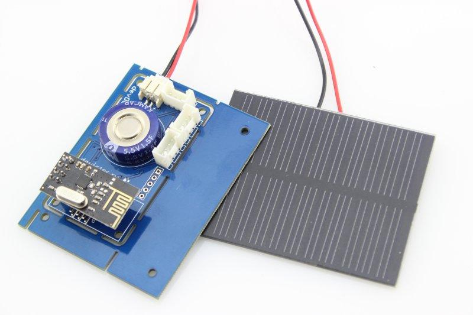
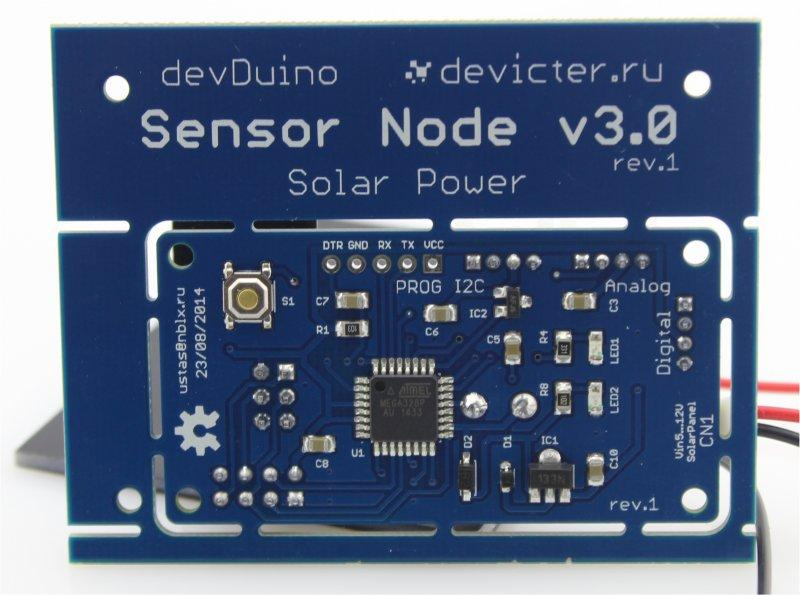
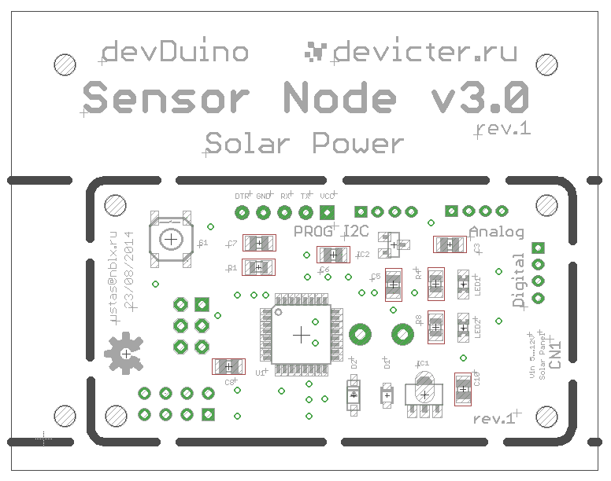
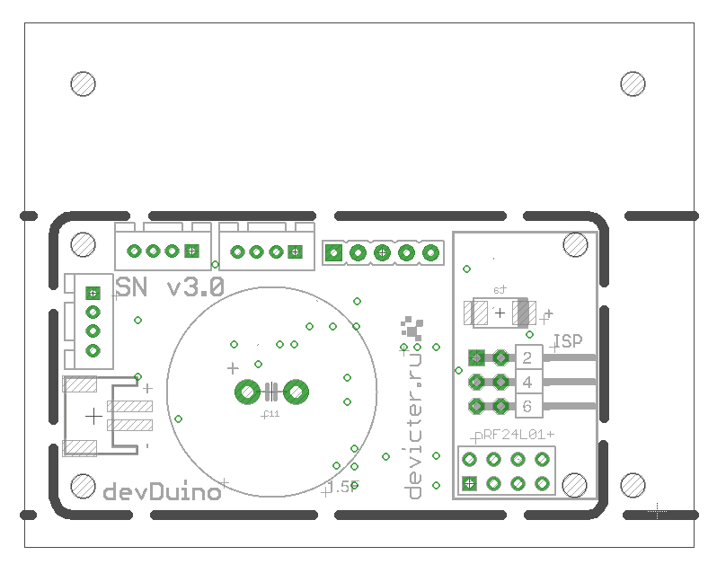
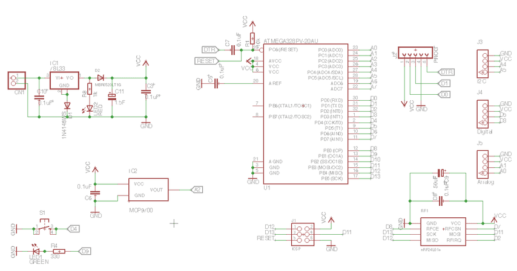

devDuino Sensor Node V3.0 (ATmega 328) is a compact Arduino-compatible microcontroller and is designed to build wireless networks based on transceiver nRF24L01+. You can easily connect other sensors (series Grove) or actuators to this platform, to build your remote monitoring or controlling system. In contrast to the version 1 and 2 powered by solar panels
and batteries used in place super capacitor.
Model:113990095
 
 

In the basic version (without adding additional sensors) module can be used as a wireless temperature sensor (using built-in sensor MCP9700, connected to A2)
Basic functionality can be greatly expanded with a series connection of the various components (series Grove).
Since the capacitance supercapacitors very high - for its primary charging may require considerable time (10-15 minutes in the sun until the module will start and begin its work) - this is not a malfunction. To indicate the charging process on the module is a special LED(green): when it shines, it is in the process of charge supercapacitors from the solar cell.
Includes panel power 0.5W. If necessary, you can use a panel more power.
If you want to get even further about 2K more memory for your sketch, you can use almost any ISP-Programmer for example, Arduino ISP (regular Arduino-compatible board and a standard example of the environment Arduino) or USBtinyISP.
Connecting programmer via 6-pin connector (ISP) on the module (battery installed when programming is required - module receives power from the programmer).
By default, the standard boot stitched microcontroller Arduino, allowing to record the firmware in the module with the type of programmers FOCA v2.2.
Connecting the programmer via 5-pin (PROG) on the module (battery installed when programming is required - module receives power from the programmer)
Warning! Do not forget to set the programmer working voltage of 3.3V. When flashing the bootloader via ISP, be sure to disconnect the wireless module nRF24L01 +.
Just programmer can be used to debug (monitor port).
In the first case, to maximize the operating time of a battery should be fitted in use nRF24L01+ power saving mechanisms:
...
radio.powerUp(); //turn the power on NRF24
// sending data
...
radio.powerDown(); //turn off the power on NRF24
...
Button connected to digital pin of D4 without external pull-up resistor. This connection is necessary to use the built-in pull-up resistor microcontroller.
This is done as follows (in the example being polled button once 0.5s and if it is pressed - LED lights):
void setup (){
// button
pinMode(4, INPUT);
// enable pull-up resistor
digitalWrite(4, HIGH);
// LED
pinMode(9, OUTPUT);
}
void loop(){
if(digitalRead(4) == LOW) {
digitalWrite(9, HIGH);
}
else {
digitalWrite(9, LOW);
}
delay(500);
}
Besides measuring the voltage at the voltage divider with a simple analogRead (A2), you can use more "advanced" way - use the built-in capabilities of the microcontroller.
You can use the following universal function:
long readVcc() {
// Read 1.1V reference against AVcc
// set the reference to Vcc and the measurement to the internal 1.1V reference
#if defined(__AVR_ATmega32U4__) || defined(__AVR_ATmega1280__) || defined(__AVR_ATmega2560__)
ADMUX = _BV(REFS0) | _BV(MUX4) | _BV(MUX3) | _BV(MUX2) | _BV(MUX1);
#elif defined (__AVR_ATtiny24__) || defined(__AVR_ATtiny44__) || defined(__AVR_ATtiny84__)
ADMUX = _BV(MUX5) | _BV(MUX0);
#elif defined (__AVR_ATtiny25__) || defined(__AVR_ATtiny45__) || defined(__AVR_ATtiny85__)
ADMUX = _BV(MUX3) | _BV(MUX2);
#else
ADMUX = _BV(REFS0) | _BV(MUX3) | _BV(MUX2) | _BV(MUX1);
#endif
delay(75); // Wait for Vref to settle
ADCSRA |= _BV(ADSC); // Start conversion
while (bit_is_set(ADCSRA,ADSC)); // measuring
uint8_t low = ADCL; // must read ADCL first - it then locks ADCH
uint8_t high = ADCH; // unlocks both
long result = (high<<8) | low;
result = 1125300L / result; // Calculate Vcc (in mV); 1125300 = 1.1*1023*1000
return result; // Vcc in millivolts
}
The function returns the voltage in millivolts.
In the present pin connector Digital D3. The peculiarity of its use is that this digital signal to the pins of the interrupt can be processed (INT1).
To ensure longer battery module from Super capacitor can reduce the frequency of the microcontroller to 1MHz and lower "threshold" voltage at which it will start to 1.8V.
This is done by adding the following section in the file boards.txt IDE Arduino:
s328o1.name=Sensor328p (int 1MHz, 1.8V) s328o1.upload.protocol=arduino s328o1.upload.maximum_size=30720 s328o1.upload.speed=57600 s328o1.bootloader.low_fuses=0x62 s328o1.bootloader.high_fuses=0xda s328o1.bootloader.extended_fuses=0x06 s328o1.bootloader.path=atmega s328o1.bootloader.file=ATmegaBOOT_168_atmega328_pro_8MHz.hex #s328o8.bootloader.file=ATmegaBOOT_168_atmega328.hex s328o1.bootloader.unlock_bits=0x3F s328o1.bootloader.lock_bits=0x0F s328o1.build.mcu=atmega328p s328o1.build.f_cpu=1000000L s328o1.build.core=arduino s328o1.build.variant=standard s328o1.build.mcu=atmega328p s328o1.build.f_cpu=1000000L s328o1.build.core=arduino s328o1.build.variant=standard
After adding this code to the appropriate file (and restarting the Arduino) in the list of available cards will be a new line: Sensor328p (int1MHz, 2.66V)
Warning! Fuse bits specified in the file boards.txt and defining modes of microcontroller sewn Arduino environment only when writing the bootloader (but not the firmware of the microcontroller).
To correct fuse bits without changing the boot loader can be used, for example avrdude GUI
To use the Sensor Node requires the following libraries:
Requires the libraries that are used at work RF24:
Library has used examples of them just to understand how it works.
Initialization RF-module as follows:
... //RF24 radio(CE,CSN); RF24 radio(8,7); ...
#include <SPI.h> #include "RF24.h" #include <digitalWriteFast.h> #include <avr/sleep.h> #include <avr/wdt.h> #define CNT 60 // the number of cycles to 8 seconds between "broadcast" (60 = 8 minutes between sending) int count; //variable for the cycle counter volatile boolean wdt_tripped=1; // description of module parameters #define SID 500 // External ID of the sensor #define NumSensors 4 // Number of sensors (and another required value - the name of the sensor) boolean mode = 0; // 0 - Normal mode (rarely sends data and does not blink), 1 - test mode (data is sent every 8 seconds and the LED to blink) ///////////////////////////////////////////////////////////////////////////// // create a structure for the transmission of values typedef struct{ int SensorID; // ID sensor int ParamID; // ID parameter float ParamValue; // parameter value char Comment[16]; // comment } Message; #define LED 9 #define BUTTON 4 // create a structure for the description of the parameters typedef struct{ float Value; // value char Note[16]; // comment } Parameter; int tests=0; ///////////////////////////////////////////////////////////////////////////// Parameter MySensors[NumSensors+1] = { // description sensors (primary initialization) NumSensors, "SN3 (in&out)", // in the "comment" indicate explanatory information about the sensor and the number of sensors 0, "TempIN, C", // temperature with internal sensor 0, "VCC, V", // supply voltage (at microcontroller internal data) 0, "BATT, Flag", // status that the Super capacitor enough voltage (0 - "dead", 1 - "live") 0, "NonameSens" // data from any sensor //0, "TempOUT, C" // temperature with external sensor }; Message sensor; ///////////////////////////////////////////////////////////////////////////// //RF24 radio(CE,CSN); RF24 radio(8,7); // choose two "pipe" (choose your own) const uint64_t pipes[2] = { 0xF0F0F0F0A1LL, 0xF0F0F0F0A2LL }; ///////////////////////////////////////////////////////////////////////////// //sleep mode for the microcontroller void system_sleep() { delay(2); // Wait for serial traffic _SFR_BYTE(ADCSRA) &= ~_BV(ADEN); // Switch ADC off set_sleep_mode(SLEEP_MODE_PWR_DOWN); sleep_enable(); sleep_mode(); // System sleeps here sleep_disable(); _SFR_BYTE(ADCSRA) |= _BV(ADEN); // Switch ADC on } void wdt_interrupt_mode() { wdt_reset(); WDTCSR |= _BV(WDIE); // Restore WDT interrupt mode } ISR(WDT_vect) { wdt_tripped=1; // set global volatile variable } void setup() { wdt_disable(); wdt_reset(); wdt_enable(WDTO_8S); //waking up every 8 seconds count = 0; // LED pinMode(LED, OUTPUT); radio.begin(); // radio.setPALevel(RF24_PA_HIGH); //power level // radio.setDataRate(RF24_250KBPS); // transmission speed radio.setRetries(15,15); // The channel number on which the work (pick your own) radio.setChannel(xxx); radio.openWritingPipe(pipes[0]); radio.openReadingPipe(1,pipes[1]); radio.stopListening(); // disable receive mode // startup include "test" mode - data is sent frequently, and the LED to blink mode = 1; } void loop(void) { //then you can increase the time interval between the sending of data by RF24 cycle counter wdt_interrupt_mode(); if (wdt_tripped) { count++; wdt_tripped = 0; // send data if already "it's time" if (count == ((mode==1) ? (count) : (CNT))) { calculateValue(); // LED will light if (mode == 1) { digitalWrite(LED, HIGH); } radio.powerUp(); //give power to the NRF24 delay(20); for (int i=1; i<=NumSensors; i++){ sendSensorMessage(i); } radio.powerDown(); // тurning off the power RF24 delay(20); count = 0; // extinguish the LED if (mode == 1) { digitalWrite(LED, LOW); } } } if(tests<10) { mode = 1; tests++; } else { mode = 0; } // sleep! system_sleep(); //microcontroller sleeps } // calculation function of the sensor values void calculateValue(){ // code for receiving data // supply voltage MySensors[2].Value = ((float) readVcc())/1000.0; // embedded temperature sensor (connected to A2) MySensors[1].Value = (((float)analogRead(A2) * MySensors[2].Value / 1024.0) - 0.5)/0.01; // If the voltage is greater than 2.67V - ionistor "alive" (1) // if less - "soon die" (0) MySensors[3].Value = (MySensors[2].Value > 2.67) ? 1 : 0; // external temperature sensor (connected to the A1 via the "Analog") //MySensors[4].Value = (((float)analogRead(A0) * MySensors[2].Value / 1024.0) - 0.5)/0.01; MySensors[4].Value = 0; return; } // send message (parameter identifier) void sendSensorMessage(int ParamID) { //prepare the data for transmission to the structure sensor.SensorID = SID; sensor.ParamID = ParamID; sensor.ParamValue = MySensors[ParamID].Value; memcpy(&sensor.Comment,(char*)MySensors[ParamID].Note, 16); //send data RF24 bool ok = radio.write( &sensor, sizeof(sensor) ); delay (20); return; } long readVcc() { // Read 1.1V reference against AVcc // set the reference to Vcc and the measurement to the internal 1.1V reference #if defined(__AVR_ATmega32U4__) || defined(__AVR_ATmega1280__) || defined(__AVR_ATmega2560__) ADMUX = _BV(REFS0) | _BV(MUX4) | _BV(MUX3) | _BV(MUX2) | _BV(MUX1); #elif defined (__AVR_ATtiny24__) || defined(__AVR_ATtiny44__) || defined(__AVR_ATtiny84__) ADMUX = _BV(MUX5) | _BV(MUX0); #elif defined (__AVR_ATtiny25__) || defined(__AVR_ATtiny45__) || defined(__AVR_ATtiny85__) ADMUX = _BV(MUX3) | _BV(MUX2); #else ADMUX = _BV(REFS0) | _BV(MUX3) | _BV(MUX2) | _BV(MUX1); #endif delay(75); // Wait for Vref to settle ADCSRA |= _BV(ADSC); // Start conversion while (bit_is_set(ADCSRA,ADSC)); // measuring uint8_t low = ADCL; // must read ADCL first - it then locks ADCH uint8_t high = ADCH; // unlocks both long result = (high<<8) | low; result = 1125300L / result; // Calculate Vcc (in mV); 1125300 = 1.1*1023*1000 return result; // Vcc in millivolts }
| Revision | Description | Release |
| 3.0 rev 1 | Public version | 23.08.2014 |
This product can be purchased:
China (shipping worldwide)
Seeed store
Elecrow store
Russia
Devicter store
This documentation is licensed under the Creative Commons Attribution-ShareAlike License 3.0 Source code and libraries are
licensed under GPL/LGPL, see source code files for details.
Copyright (c) 2008-2016 Seeed Development Limited (www.seeedstudio.com / www.seeed.cc)